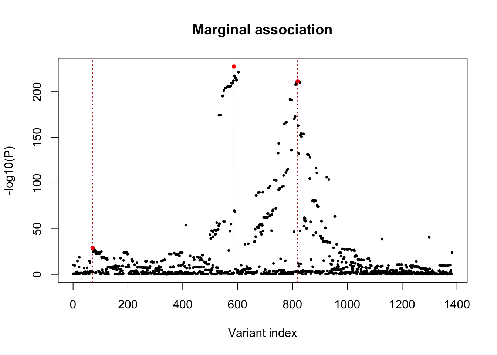
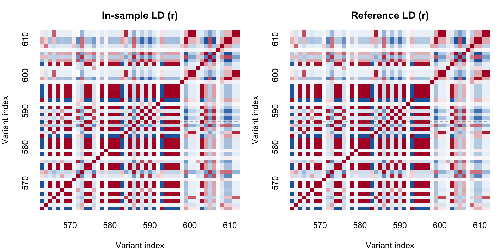
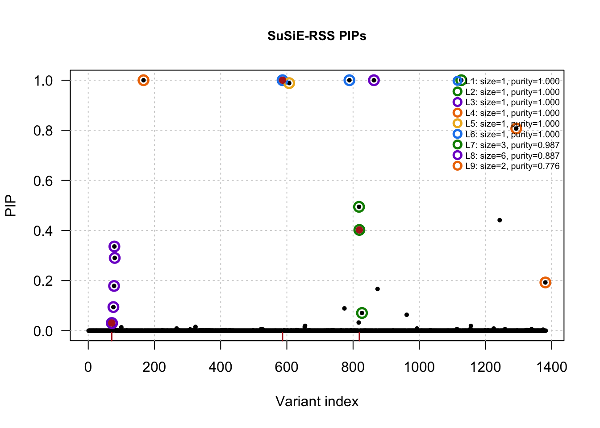
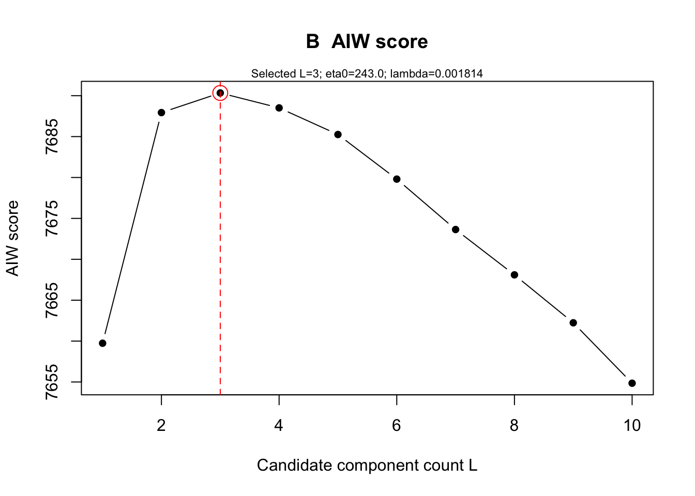
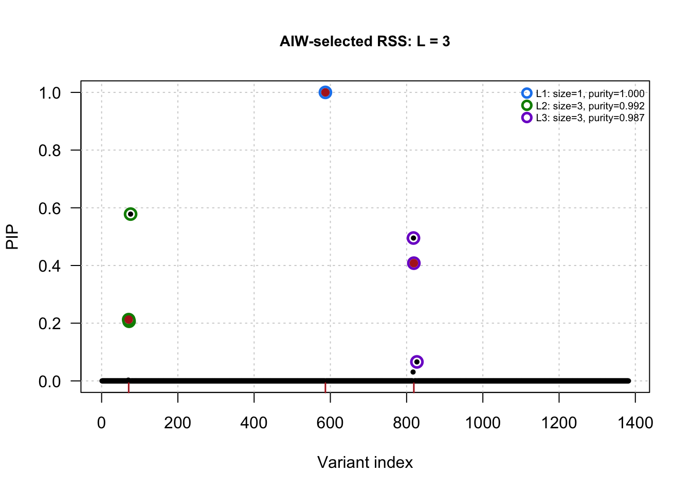
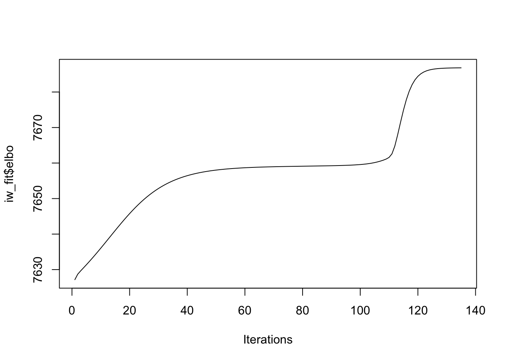
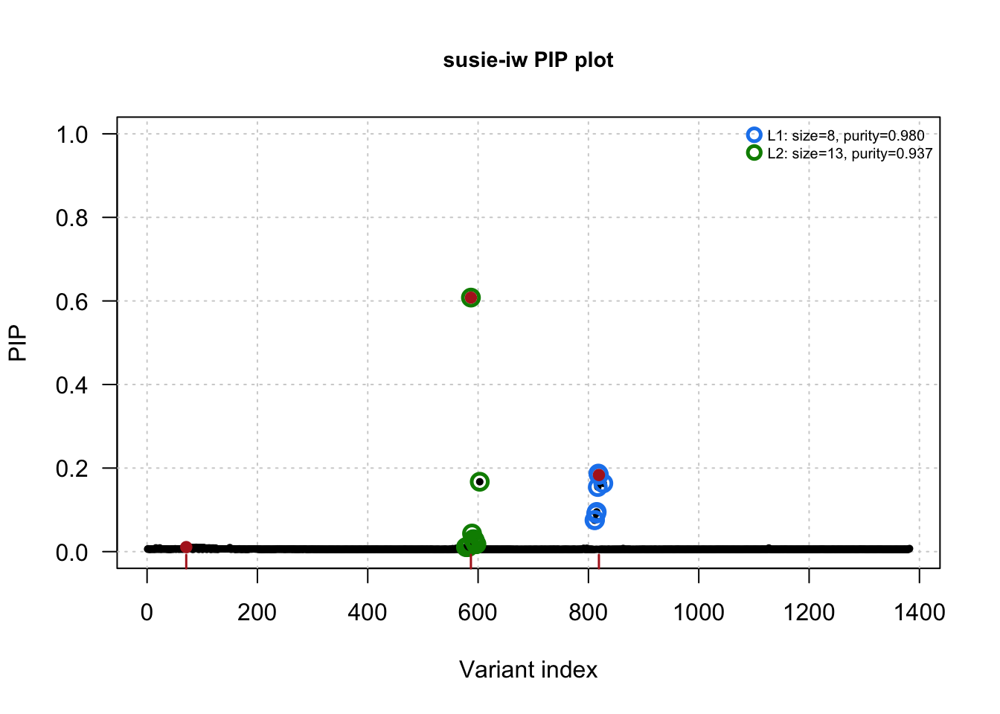
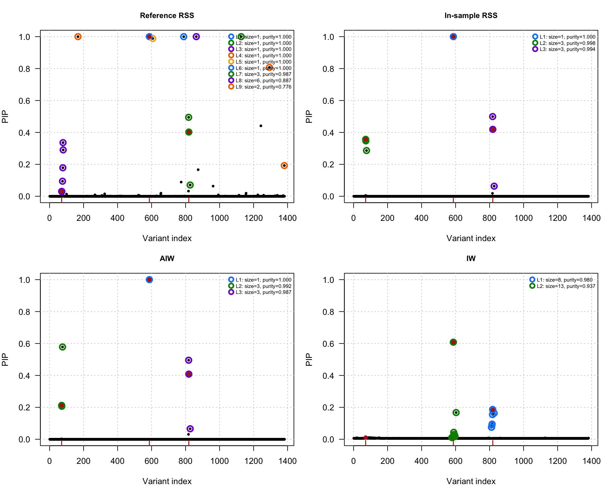

Last updated: 2026-10-26
Checks: 7 0
Knit directory: susieRobust-workflowr/
This reproducible R Markdown analysis was created with workflowr (version 1.7.2). The Checks tab describes the reproducibility checks that were applied when the results were created. The Past versions tab lists the development history.
Great! Since the R Markdown file has been committed to the Git repository, you know the exact version of the code that produced these results.
Great job! The global environment was empty. Objects defined in the global environment can affect the analysis in your R Markdown file in unknown ways. For reproduciblity it’s best to always run the code in an empty environment.
The command set.seed(20261018) was run prior to running
the code in the R Markdown file. Setting a seed ensures that any results
that rely on randomness, e.g. subsampling or permutations, are
reproducible.
Great job! Recording the operating system, R version, and package versions is critical for reproducibility.
Nice! There were no cached chunks for this analysis, so you can be confident that you successfully produced the results during this run.
Great job! Using relative paths to the files within your workflowr project makes it easier to run your code on other machines.
Great! You are using Git for version control. Tracking code development and connecting the code version to the results is critical for reproducibility.
The results in this page were generated with repository version b510ad1. See the Past versions tab to see a history of the changes made to the R Markdown and HTML files.
Note that you need to be careful to ensure that all relevant files for
the analysis have been committed to Git prior to generating the results
(you can use wflow_publish or
wflow_git_commit). workflowr only checks the R Markdown
file, but you know if there are other scripts or data files that it
depends on. Below is the status of the Git repository when the results
were generated:
Ignored files:
Ignored: .DS_Store
Note that any generated files, e.g. HTML, png, CSS, etc., are not included in this status report because it is ok for generated content to have uncommitted changes.
These are the previous versions of the repository in which changes were
made to the R Markdown (analysis/01-get-started.Rmd) and
HTML (docs/01-get-started.html) files. If you’ve configured
a remote Git repository (see ?wflow_git_remote), click on
the hyperlinks in the table below to view the files as they were in that
past version.
| File | Version | Author | Date | Message |
|---|---|---|---|---|
| Rmd | b510ad1 | dodat-stats | 2026-10-26 | Add fine-mapping tutorials and saved simulation data |
Here we use coalescent simulation to simulate two populations, GWAS
cohort and reference panel, split \(T\)
generations ago, which are then used to calculate in-sample LD matrix
\(R\) and reference LD \(R_0\). Both follow the EUR population-size
history from OutOfAfrica_2T12 (present-day effective size
approximately 501,436), with identical growth before their split and no
migration. Recombination is \(10^{-8}\)
per base per generation.
library(susieRobust)
library(susieR)
## setting
N <- 200000L
N0 <- 5000L
T <- 200L
L_true <- 3L; L_max <- 10L; h2 <- 0.01
coverage <- 0.95; min_abs_corr <- 0.5Load the saved simulation from the data folder; Python and stdpopsim are not needed for this step. The file also contains SNP positions and simulation settings.
ld <- readRDS("data/getting-started/ld.rds")
R <- ld$R; R0 <- ld$R0; position <- ld$position
# Use the sample sizes and split time belonging to the saved matrices.
N <- ld$settings$N; N0 <- ld$settings$N0; T <- ld$settings$T
J <- ncol(R)
stopifnot(J >= L_true, identical(dim(R), dim(R0)), length(position) == J)To generate different LD matrices, uncomment the block below and
adjust the settings. Run it instead of the loading block above; set
N, N0, and T in the initial
settings chunk. The optional final line replaces the saved data.
# # Python packages are installed in /usr/bin/python3's user site-packages.
# library(reticulate)
# use_python("/usr/bin/python3", required = TRUE)
# sp <- import("stdpopsim", convert = FALSE)
#
# # 1. Settings: one study, one reference, one split time (no migration).
# seed <- 1L; length_bp <- 700000L ## 700 kb
# recombination_rate <- 1e-8; mutation_rate <- 2.36e-8
#
# # 2. Coalescent simulation through stdpopsim, followed by shared-SNP LD.
# # EUR growth: Tennessen et al. (2012), Science, doi:10.1126/science.1219240.
# # stdpopsim parameters follow Fu et al. (2013), Fig. S5, doi:10.1038/nature11690.
# # We remove migration and add a reference branch with the same EUR growth history.
# # Binary mutations, study MAF >=1%, polymorphic in BOTH cohorts, common SNP order.
# # This single-pair illustration does not condition on the paper's other T panels.
# py_run_string("
# import numpy as np, msprime
#
# def simulate_ld(sp, N, N0, T, length_bp, rec, mut, seed):
# if not 0 < T < 2040:
# raise ValueError('T must be strictly between 0 and 2040 generations.')
# dem = sp.get_species('HomSap').get_demographic_model('OutOfAfrica_2T12').model.copy()
# dem.migration_matrix[:] = 0
# dem.events = [e for e in dem.events if not isinstance(e, msprime.MigrationRateChange)]
# eur = dem['EUR']
# changes = [e for e in dem.events if isinstance(e, msprime.PopulationParametersChange)
# and e.population in ('EUR', eur.id)]
# dem.add_population(name='reference', initial_size=eur.initial_size,
# growth_rate=eur.growth_rate)
# for e in changes:
# if e.time < T:
# dem.add_population_parameters_change(time=e.time, population='reference',
# initial_size=e.initial_size, growth_rate=e.growth_rate)
# dem.add_population_split(time=T, derived=['reference'], ancestral='EUR')
# dem['EUR'].initially_active = True
# dem['EUR'].default_sampling_time = 0
# dem.sort_events()
# dem.validate()
# ts = msprime.sim_ancestry(samples={'EUR': N, 'reference': N0}, ploidy=2,
# demography=dem, sequence_length=length_bp, recombination_rate=rec,
# model=[msprime.DiscreteTimeWrightFisher(duration=100), msprime.StandardCoalescent()],
# random_seed=seed)
# ts = msprime.sim_mutations(ts, rate=mut, model=msprime.BinaryMutationModel(), random_seed=seed+1)
# study, reference = ts.samples(population=dem['EUR'].id), ts.samples(population=dem['reference'].id)
# nodes = np.r_[study, reference]
# ids = ts.tables.nodes.individual[nodes]
# assert np.all(ids >= 0) and np.array_equal(ids[::2], ids[1::2])
# sites = [s.id for tree in ts.trees(tracked_samples=study) for s in tree.sites()
# if len(s.mutations)==1 and 0.01 <= tree.num_tracked_samples(s.mutations[0].node)/len(study) <= 0.99]
# ts = ts.delete_sites(np.setdiff1d(np.arange(ts.num_sites), sites))
# dosage, positions = [], []
# for variant in ts.variants(samples=nodes, isolated_as_missing=False):
# g = variant.genotypes.reshape(-1, 2).sum(axis=1, dtype=np.int8)
# if np.ptp(g[:N]) > 0 and np.ptp(g[N:]) > 0:
# dosage.append(g); positions.append(variant.site.position)
# J = len(dosage)
# if J == 0:
# raise ValueError('No SNPs pass the MAF and shared-polymorphism filters.')
# G = np.asarray(dosage, dtype=np.int8).T
# def ld(g):
# sums = g.sum(axis=0, dtype=float); cross = np.zeros((J,J))
# for start in range(0, len(g), 2000):
# x = g[start:start+2000].astype(float); cross += np.dot(x.T, x)
# cross -= np.outer(sums, sums)/len(g)
# sd = np.sqrt(np.diag(cross)); return cross/sd[:,None]/sd[None,:]
# return {'R': ld(G[:N]), 'R0': ld(G[N:]), 'position': np.asarray(positions)}
# ")
# ld <- py$simulate_ld(sp, N, N0, T, length_bp,
# recombination_rate, mutation_rate, seed)
# R <- ld$R; R0 <- ld$R0; position <- ld$position
# J <- ncol(R) # All retained locus variants; no SNP thinning.
# stopifnot(J >= L_true)
# settings <- list(N=N, N0=N0, T=T, seed=seed, length_bp=length_bp,
# recombination_rate=recombination_rate, mutation_rate=mutation_rate,
# demographic_model="OutOfAfrica_2T12", branch_design="shared_growth",
# migration=FALSE, dtwf_generations=100L, study_maf_min=0.01)
# # Optional: save the newly simulated matrices for future sessions.
# # saveRDS(list(R=R, R0=R0, position=position, settings=settings),
# # "data/getting-started/ld.rds", compress="gzip")# 3. Simulate marginal associations: residual variance 1, local heritability h2.
set.seed(4)
causal <- sort(sample.int(J, L_true))
beta <- numeric(J)
# Draw independent N(0,1) causal effects, then jointly rescale to target h2.
beta[causal] <- rnorm(L_true)
beta <- beta * sqrt(h2 / ((1-h2) * drop(crossprod(beta, R %*% beta))))
e <- eigen(R, symmetric=TRUE) # Clip only rounding-level negative eigenvalues.
stopifnot(min(e$values) > -1e-8)
v <- drop(R %*% beta + e$vectors %*% (sqrt(pmax(e$values, 0)/N) * rnorm(J)))
z <- sqrt(N)*v # Working Gaussian z, not a separately simulated marginal t statistic.
neg_log10p = -log(2)/log(10)-pnorm(-abs(z), log.p=TRUE)/log(10)
par(mfrow=c(1,1))
plot(seq_len(J), neg_log10p,
pch=16, cex=.5, xlab="Variant index", ylab="-log10(P)", main="Marginal association")
points(causal, neg_log10p[causal],
pch=16, cex=.8, col = "red")
abline(v=causal, col="firebrick", lty=3)
The LD panels show the same 50 consecutive retained SNPs around the lead SNP (largest absolute association z-score), shifting the window at locus boundaries.
lead <- which.max(abs(z))
window_size <- min(50L, J)
window_start <- max(1L, min(lead - (window_size - 1L) %/% 2L,
J - window_size + 1L))
ld_index <- seq.int(window_start, length.out=window_size)
local({
old_par <- par(mfrow=c(1,2), mar=c(4,4,3,1))
on.exit(par(old_par))
ld_colors <- colorRampPalette(c("#2166AC","white","#B2182B"))(101)
for (panel in c("In-sample LD (r)", "Reference LD (r)")) {
ld_matrix <- if (panel == "In-sample LD (r)") R else R0
image(ld_index, ld_index, ld_matrix[ld_index, ld_index, drop=FALSE],
zlim=c(-1,1), col=ld_colors,
xlab="Variant index", ylab="Variant index", main=panel)
abline(v=lead, h=lead, col="black", lty=2)
}
})
# Working sufficient statistics for v ~ N(R beta, R/N), using reference LD.
# Match the v-input convention in susie_aiw; fix residual variance at 1.
# Active interface: susieR 0.14.2, installed on this machine.
fit_rss <- susieR::susie_suff_stat(
XtX=N * R0, Xty=N * v, yty=N, n=N, L=L_max,
residual_variance=1, estimate_residual_variance=FALSE,
standardize=FALSE, max_iter=1000, tol=1e-3,
coverage=coverage, min_abs_corr=min_abs_corr, n_purity=J)HINT: For large R or large XtX, consider installing the Rfast package for better performance.# Alternative for newer susieR versions exporting susie_ss():
# https://stephenslab.github.io/susieR/reference/susie_ss.html
# fit_rss <- susieR::susie_ss(
# XtX=N * R0, Xty=N * v, yty=N, n=N, L=L_max,
# residual_variance=1, estimate_residual_variance=FALSE,
# standardize=FALSE, max_iter=1000, tol=1e-3,
# coverage=coverage, min_abs_corr=min_abs_corr, n_purity=J)
par(mfrow=c(1,1))
plot_pip(fit_rss, causal=causal, R=R0, main="SuSiE-RSS PIPs")
The name will be changed to PiW, but right now we use 2 of them exchangably.
fit <- susie_aiw(v=v, R0=R0, N=N, L=seq_len(L_max), keep_fits=TRUE, max_iter=1000,
coverage=coverage, min_abs_corr=min_abs_corr, verbose=TRUE)HINT: For large R or large XtX, consider installing the Rfast package for better performance.L=1 lambda=0.00123704 eta0=98.2927 AIW score=7659.739892 (interior)HINT: For large R or large XtX, consider installing the Rfast package for better performance.L=2 lambda=0.00166016 eta0=206.283 AIW score=7687.935057 (interior)HINT: For large R or large XtX, consider installing the Rfast package for better performance.L=3 lambda=0.00181392 eta0=243.033 AIW score=7690.335008 (interior)HINT: For large R or large XtX, consider installing the Rfast package for better performance.L=4 lambda=0.00192425 eta0=268.863 AIW score=7688.511009 (interior)HINT: For large R or large XtX, consider installing the Rfast package for better performance.L=5 lambda=0.00201212 eta0=289.088 AIW score=7685.254752 (interior)HINT: For large R or large XtX, consider installing the Rfast package for better performance.L=6 lambda=0.00203984 eta0=296.223 AIW score=7679.801354 (interior)HINT: For large R or large XtX, consider installing the Rfast package for better performance.L=7 lambda=0.00206701 eta0=303.254 AIW score=7673.640175 (interior)HINT: For large R or large XtX, consider installing the Rfast package for better performance.L=8 lambda=0.0020873 eta0=308.76 AIW score=7668.098941 (interior)HINT: For large R or large XtX, consider installing the Rfast package for better performance.L=9 lambda=0.00210531 eta0=313.758 AIW score=7662.239360 (interior)HINT: For large R or large XtX, consider installing the Rfast package for better performance.L=10 lambda=0.00212751 eta0=319.695 AIW score=7654.852569 (interior)scores <- fit$scoresScore plot
plot(scores$L, scores$objective, type="b", pch=16,
xlab="Candidate component count L", ylab="AIW score", main="B AIW score")
points(fit$selected_L, scores$objective[fit$selected_L], pch=1, col="red", cex=2)
abline(v = fit$selected_L, col = "red", lty = "dashed")
mtext(sprintf("Selected L=%d; eta0=%.1f; lambda=%.4g", fit$selected_L, fit$eta0, fit$selected_lambda), cex=.7)
Print score and diagnostics.
print(scores[, c("L", "objective", "eta0", "lambda", "rss_converged", "parameter_converged")]) L objective eta0 lambda rss_converged parameter_converged
1 1 7659.740 98.29271 0.001237035 TRUE TRUE
2 2 7687.935 206.28276 0.001660160 TRUE TRUE
3 3 7690.335 243.03300 0.001813916 TRUE TRUE
4 4 7688.511 268.86252 0.001924249 TRUE TRUE
5 5 7685.255 289.08840 0.002012118 TRUE TRUE
6 6 7679.801 296.22305 0.002039836 TRUE TRUE
7 7 7673.640 303.25394 0.002067005 TRUE TRUE
8 8 7668.099 308.76013 0.002087297 TRUE TRUE
9 9 7662.239 313.75803 0.002105312 TRUE TRUE
10 10 7654.853 319.69463 0.002127506 TRUE TRUEThe AIW-selected RSS fit (apply purity filtering as usual)
plot_pip(fit, causal=causal, R=R0, main=paste("AIW-selected RSS: L =", fit$selected_L))
Here we will fit SuSiE-IW and plot PIP from the inferred fit. It is shown in the manuscript that SuSiE-IW can have better coverage than AIW under severe mismatch, but it might have less power under moderate to severe mismatch. Moreoever, its credible set sizes tend to be larger.
iw_fit <- susie_iw(v=v, R0=R0, N=N, L=L_max, max_iter=1000, tol = 1e-6)plot(iw_fit$elbo, type = "l", xlab = "Iterations")
plot_pip(iw_fit, causal=causal, R=R0, main="susie-iw PIP plot")
Here we fit susie-rss with the oracle in-sample LD and summarize all fit.
# Same sufficient-statistics settings as reference RSS, using study LD.
fit_rss_in_sample <- susieR::susie_suff_stat(
XtX=N * R, Xty=N * v, yty=N, n=N, L=L_max,
residual_variance=1, estimate_residual_variance=FALSE,
standardize=FALSE, max_iter=1000, tol=1e-3,
coverage=coverage, min_abs_corr=min_abs_corr, n_purity=J)HINT: For large R or large XtX, consider installing the Rfast package for better performance.# For newer susieR versions, replace susie_suff_stat above with susie_ss.local({
old_par <- par(mfrow=c(2,2), mar=c(4,4,3,1))
on.exit(par(old_par))
plot_pip(fit_rss, causal=causal, R=R0, main="Reference RSS")
plot_pip(fit_rss_in_sample, causal=causal, R=R, main="In-sample RSS")
plot_pip(fit, causal=causal, R=R0, main="AIW")
plot_pip(iw_fit, causal=causal, R=R0, main="IW")
})
sessionInfo()R version 4.6.1 (2026-06-24)
Platform: aarch64-apple-darwin23
Running under: macOS Golden Gate 27.0.1
Matrix products: default
BLAS: /Library/Frameworks/R.framework/Versions/4.6/Resources/lib/libRblas.0.dylib
LAPACK: /Library/Frameworks/R.framework/Versions/4.6/Resources/lib/libRlapack.dylib; LAPACK version 3.12.1
locale:
[1] C.UTF-8/C.UTF-8/C.UTF-8/C/C.UTF-8/C.UTF-8
time zone: America/New_York
tzcode source: internal
attached base packages:
[1] stats graphics grDevices utils datasets methods base
other attached packages:
[1] susieR_0.14.2 susieRobust_0.0.0.9000 workflowr_1.7.2
loaded via a namespace (and not attached):
[1] sass_0.4.10 generics_0.1.4 stringi_1.8.9 lattice_0.22-9
[5] digest_0.6.39 magrittr_2.0.5 evaluate_1.0.5 grid_4.6.1
[9] RColorBrewer_1.1-3 fastmap_1.2.0 plyr_1.8.9 rprojroot_2.1.1
[13] jsonlite_2.0.0 Matrix_1.7-5 processx_3.9.0 whisker_0.4.1
[17] reshape_0.8.10 mixsqp_0.3-54 promises_1.5.0 httr_1.4.9
[21] scales_1.4.0 jquerylib_0.1.4 cli_3.6.6 rlang_1.3.0
[25] crayon_1.5.3 cachem_1.1.0 yaml_2.3.12 otel_0.2.0
[29] tools_4.6.1 dplyr_1.2.1 ggplot2_4.0.3 httpuv_1.6.17
[33] vctrs_0.7.3 R6_2.6.1 matrixStats_1.5.0 lifecycle_1.0.5
[37] git2r_0.36.2 stringr_1.6.0 fs_2.1.0 irlba_2.3.7
[41] pkgconfig_2.0.3 callr_3.8.0 pillar_1.11.1 bslib_0.12.0
[45] later_1.4.8 gtable_0.3.6 glue_1.8.1 Rcpp_1.1.2
[49] xfun_0.60 tibble_3.3.1 tidyselect_1.2.1 rstudioapi_0.19.0
[53] knitr_1.51 farver_2.1.2 htmltools_0.5.9 rmarkdown_2.32
[57] compiler_4.6.1 getPass_0.2-4 S7_0.2.2